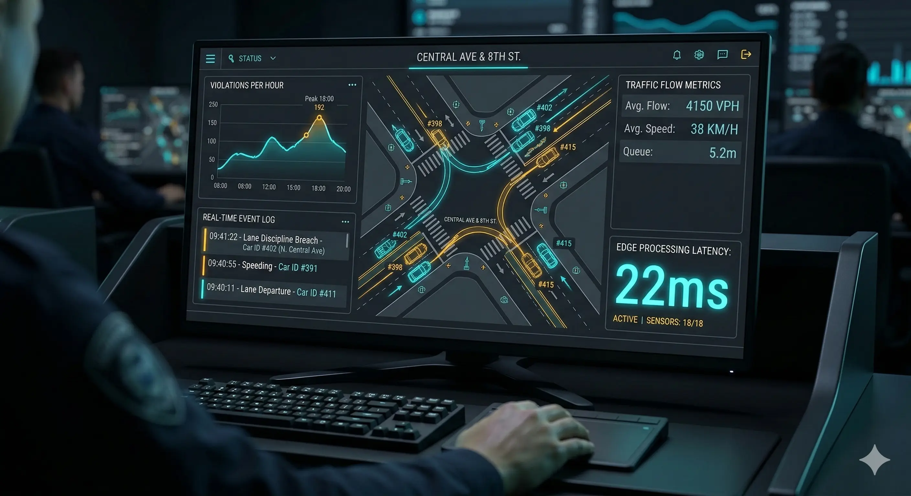

AI Engineer
& Backend Developer
Architecting secure, production-grade GenAI and LLM applications
that drive scalable efficiency in regulated domains.
About Me
I am an AI Engineer with 3 years of experience specializing in secure RAG architectures, AI Agents,LLM fine-tuning, and scalable API-based AI services.
My work focuses strongly on reliability, auditability, and cost-efficient AI deployment. I have successfully delivered an 80% reduction in manual processing across workflows while maintaining 99.9% uptime on AWS.
Capabilities
The technical engine powering scalable and secure AI architectures.
Generative AI & LLMs
Llama, JAIS, Qwen, GPT, Claude, Gemini, BERT, Hugging Face Transformers, vLLM, PEFT (LoRA, QLoRA).
Retrieval & Agentic Systems
RAG, LangChain, LangGraph, Hybrid Search (Dense + BM25), RRF, Cross-Encoder Reranking, HNSW Indexing, Text-to-SQL, RAGAS.
Backend, APIs & Databases
Python, SQL, FastAPI, WebSockets, Pydantic, PostgreSQL, DynamoDB, Redis, ChromaDB, Vespa.
MLOps & Cloud Infrastructure
AWS, Docker, Kubernetes, MLFlow, Weights & Biases, CI/CD, Model Monitoring, Drift Detection.
Selected Experience
Alphastream.ai
AI Engineer — NLP
- Designed and deployed scalable NLP pipelines for financial and legal document automation on AWS, processing hundreds of documents daily with 99.9% production uptime.
- Reduced manual document review effort by 80% (financial workflows) and 60% (legal contracts) through fine-tuned classification and structured data extraction systems.
- Fine-tuned BERT and LegalBERT models using PyTorch and Hugging Face PEFT (LoRA), improving multi-label classification F1 score from 0.70 to 0.85+ via data augmentation and hyperparameter optimization.
- Architected Hybrid RAG pipelines (Dense Embeddings + BM25 + RRF + Cross-Encoder reranking) enabling high recall multi-hop document intelligence for regulated workflows.
- Built session-aware agentic systems using Redis and DynamoDB to enable persistent multi-turn AI workflows for legal analysis applications.
- Prepared COCO-format datasets and trained YOLOv8 models for table structure detection (rows, columns, headers) to automate structured financial data extraction.
- Collaborated with product, compliance, and engineering teams to deliver auditable, regulation-aligned AI architectures suitable for enterprise deployment.
Selected Work
View GitHubGoverned RAG System
ArchitectureChallenge: Deploy a secure, air-gapped RAG solution for highly regulated compliance documents without exposing sensitive data.
Architecture: Built on-premise pipeline utilizing Hybrid Search (Vector + BM25 with RRF) and Cross-Encoder reranking.

Smart Traffic Detection
VisionChallenge: Process high-resolution live video feeds on limited edge hardware for intelligent traffic monitoring.
Architecture: Full lifecycle pipeline optimized via OpenVINO quantization running custom YOLO models on edge devices.